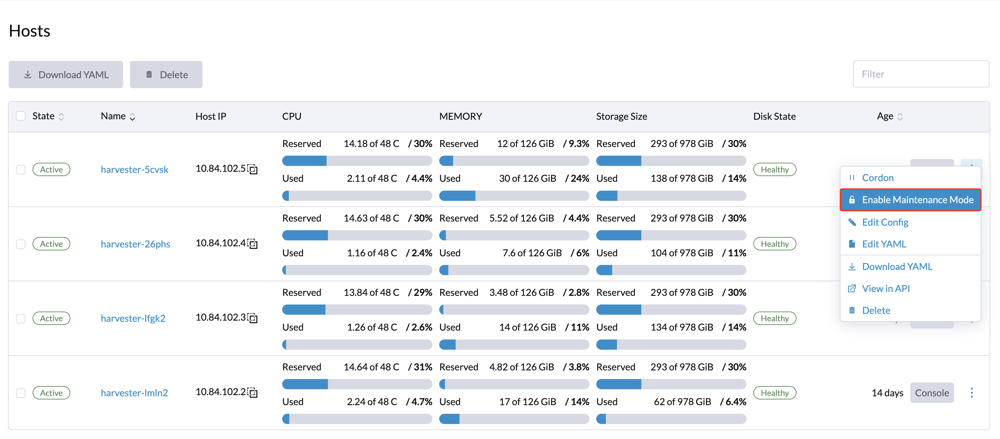
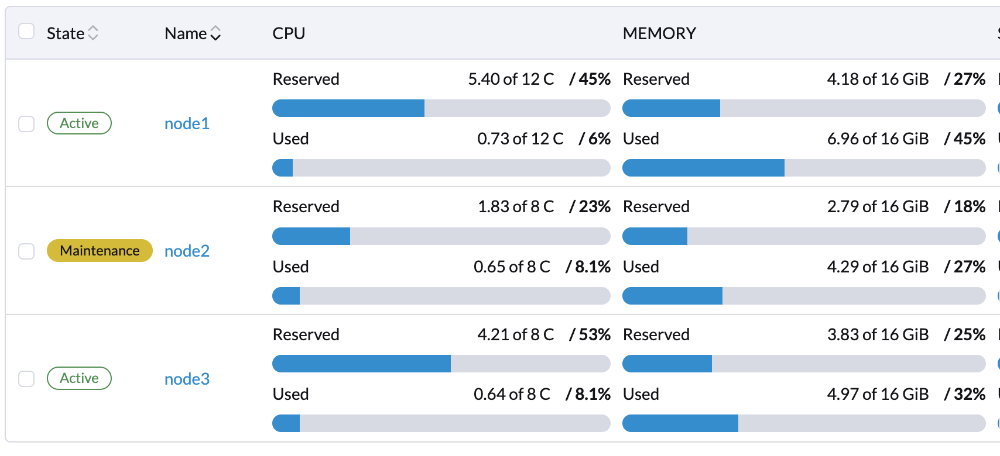
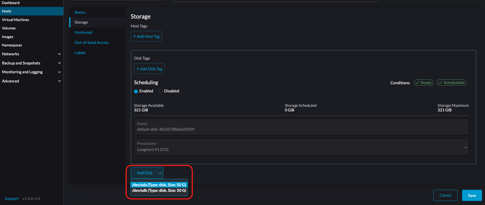
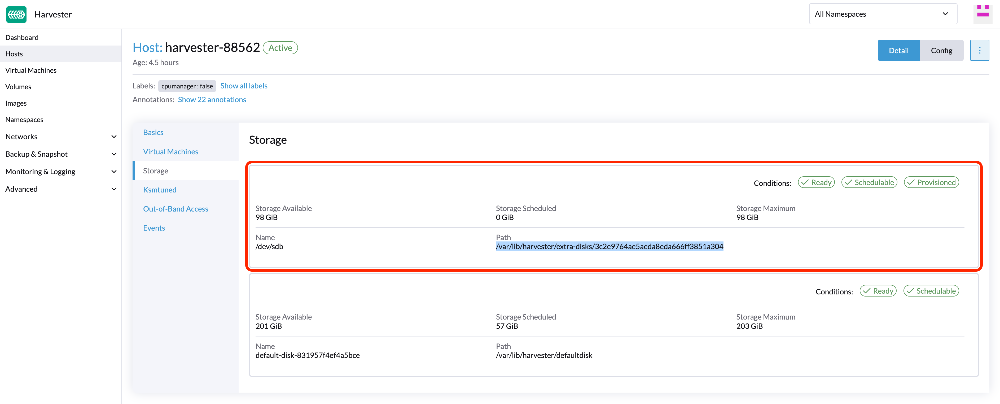
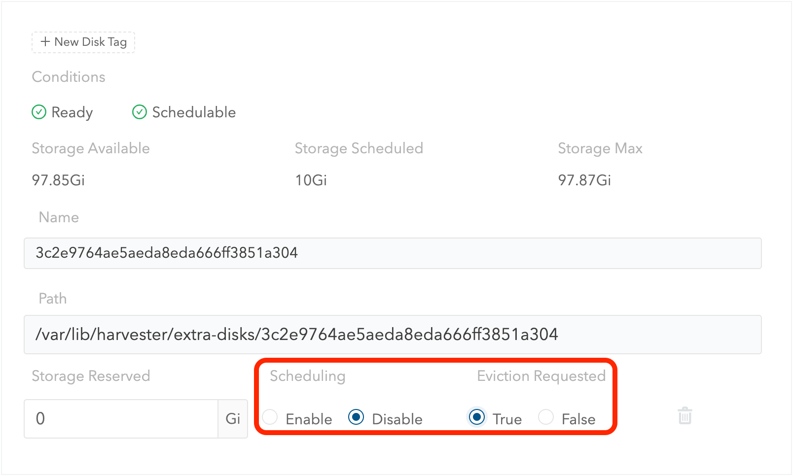
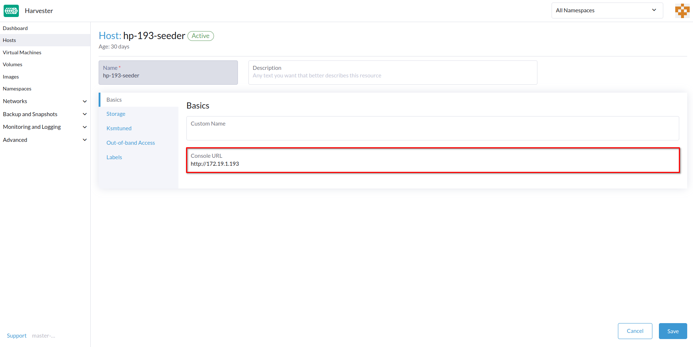

主机管理
用户可以从主机页面查看和管理SUSE Virtualization节点。第一个节点始终默认为集群的管理节点。当节点数量达到三个或更多时，最先加入的另外两个节点会自动提升为管理节点，以形成高可用集群。
|
由于SUSE Virtualization建立在Kubernetes之上并使用etcd作为数据库，因此在有三个管理节点时，最大节点容错能力为一个。 |

SUSE Virtualization为系统级操作保留处理器资源，这就是在*处理器*列中所述的总核心数略少于每个主机实际核心数的原因。有关更多信息，请参见共享CPU池的计算。
节点维护
管理员用户可以启用维护模式（选择*⋮ > 启用维护模式*）以自动驱逐节点上的所有虚拟机。此模式利用批量迁移将可实时迁移的虚拟机移动到其他节点，这在需要重启、升级固件或更换硬件组件时非常有用。使用此功能需要至少两个活动节点。
要强制单个虚拟机关闭而不是迁移到其他节点，请将标签`harvesterhci.io/maintain-mode-strategy`和以下值之一添加到这些虚拟机：
-
Migrate：将虚拟机实时迁移到集群中的另一个节点。如果未设置标签`harvesterhci.io/maintain-mode-strategy`，则这是默认行为。 -
ShutdownAndRestartAfterEnable：在节点切换到维护模式后重启虚拟机。虚拟机被调度到不同的节点上。 -
ShutdownAndRestartAfterDisable：在启用维护模式时关闭虚拟机，并在禁用维护模式时重启虚拟机。虚拟机保持在同一节点上。 -
Shutdown：当启用维护模式时，关闭虚拟机。虚拟机保持关闭状态，而不是重新启动。
您可以在 启用维护模式 屏幕上强制关闭节点上的所有虚拟机。这会使用 harvesterhci.io/maintain-mode-strategy 标签禁用单独的设置。
在关闭虚拟机之前执行特殊命令，请考虑使用 容器生命周期挂钩 PreStop。


删除节点。
|
在从 SUSE Virtualization 集群中去除节点之前，请确定剩余节点是否有足够的计算和存储资源来承担要去除节点的工作负载。检查以下各项：
如果剩余节点没有足够的资源，虚拟机可能无法迁移，移除节点时卷可能会降级。 |
1.检查节点是否可以从集群中去除。
根据集群中其他节点的数量和可用性，您可以安全地去除控制平面节点。
-
集群中有三个控制平面节点和一个或多个工作节点。
当您去除控制平面节点时，一个工作节点将被提升为控制平面节点。 SUSE Virtualization 允许您为每个加入集群的节点分配角色。在早期版本中，工作节点是随机选择进行提升的。如果您希望提升特定节点，请参见 角色管理 和 配置文件 以获取更多信息。
自动节点提升仅在控制平面节点从集群中删除时发生。这不包括由于健康检查失败而导致节点不可用的情况。不健康的节点保留其角色。
-
集群有三个控制平面节点，没有工作节点。
在去除控制平面节点之前，您必须向集群添加一个新节点。这确保集群始终有三个控制平面节点，并且即使一个控制平面节点发生故障，也能形成法定人数。
-
集群只有两个控制平面节点，没有工作节点。
在这种情况下去除控制平面节点是不推荐的，因为etcd数据在单节点集群中没有复制。单个节点的故障可能导致etcd失去法定人数并关闭集群。
3.从要去除的节点驱逐副本。
-
转到*节点*屏幕。
-
选择要去除的节点，单击*操作*列中的图标，然后选择*编辑节点和磁盘*。
-
配置以下设置：
-
节点调度：选择*禁用*。
-
请求驱逐 选择*真*。
-
-
单击*保存*。
-
返回到*节点*屏幕，验证要去除的节点的*副本*值为*0*。
|
如果剩余节点无法接受要去除节点的副本，则无法完成驱逐操作。在这种情况下，一些卷将保持在*降级*状态，直到您向集群添加更多节点。 |
4.管理不可迁移的虚拟机
检查是否有任何不可迁移的虚拟机。
|
5.从要移除的节点驱逐工作负载。
如果节点状态为*维护*，则所有工作负载已成功驱逐。

|
如果集群只有两个控制平面节点，SUSE Virtualization不允许您在任何节点上启用维护模式。您可以使用以下命令手动排空要移除的节点： kubectl drain <node_name> --force --ignore-daemonsets --delete-local-data --pod-selector='app!=csi-attacher,app!=csi-provisioner' 再次强调，在这种情况下移除控制平面节点*不推荐*，因为etcd数据未被复制。单个节点的故障可能导致etcd失去法定人数并关闭集群。 |

角色管理
硬件问题可能迫使您更换管理节点。SUSE Virtualization 通过引入以下角色来改善该过程：
-
管理：在 SUSE Virtualization 提升节点为管理节点时，允许优先考虑某个节点。
-
见证：限制节点在特定集群中作为见证节点（仅作为 etcd 节点功能）。
-
工作节点：限制节点在特定集群中作为工作节点（永远不会提升为管理节点）。
|
SUSE Virtualization 当前仅允许集群中有一个见证节点。 |
有关将角色分配给节点的更多信息，请参见ISO 安装。
多磁盘管理
添加额外磁盘
用户可以从编辑主机页面查看和添加多个磁盘作为额外数据卷。
-
转到*主机*页面。
-
在您要修改的节点上，单击*⋮ → 编辑配置*。

-
选择*存储*选项卡并单击*添加磁盘*。

SUSE Virtualization 不支持将分区作为额外磁盘添加。如果您想将其作为额外磁盘添加，请确保先删除所有分区（例如，使用
fdisk）。 -
为磁盘选择一个配置器。
-
LonghornV1 (CSI):这是默认的配置器。

如果块设备从未被强制格式化，您必须将 强制格式化 设置为 是。

-
LVM:如果您想使用 CSI 驱动程序 LVM（实验性） 为您的工作负载创建持久卷，请选择此配置器。

-
-
单击 保存。
-
在主机详细信息屏幕上，验证磁盘是否已添加并且正确的配置器已设置。
如果您希望 SUSE Storage 卷数据存储在特定节点或磁盘上，您还可以添加 存储标签。存储标签只能与 LonghornV1 (CSI) 和 LonghornV2 (CSI) 配置器一起使用。


|
为了让 SUSE Virtualization 识别磁盘，每个磁盘需要有一个唯一的 WWN。否则，SUSE Virtualization 将拒绝添加该磁盘。
如果您的磁盘没有 WWN，您可以使用 |
+
|
如果您在 QEMU 环境中测试 SUSE Virtualization，则需要使用 QEMU v6.0 或更高版本。QEMU 的早期版本将始终为 NVMe 磁盘仿真生成相同的 WWN。这将导致 SUSE Virtualization 不会添加额外的磁盘，如上所述。但是，您仍然可以使用 SCSI 控制器添加虚拟磁盘。WWN 信息可以与磁盘附加操作一起手动添加。有关更多详细信息，请参阅 脚本。 |
存储标签
存储标签功能仅允许某些节点或磁盘用于存储 SUSE Storage 卷数据。例如，性能敏感的数据只能使用标记为 fast、ssd 或 nvme 的高性能磁盘，或者仅使用标记为 baremetal 的高性能节点。
此功能支持磁盘和节点。
设置
可以通过主机页面上的 SUSE Virtualization UI 设置标签：
-
单击
Hosts->Edit Config->Storage -
单击
Add Host/Disk Tags开始输入，然后按回车键添加新标签。 -
单击
Save更新标签。 -
在 StorageClasses 页面上，创建一个新的存储类，并在
Node Selector和Disk Selector字段中选择那些定义的标签。
节点或磁盘上所有现有的调度卷不会受到新标签的影响。
|
当为一个卷指定多个标签时，磁盘和节点（磁盘所属的节点）必须具有所有指定的标签才能变得可用。 |
去除磁盘
在移除磁盘之前，您必须先驱逐磁盘上的 SUSE Storage 副本。
|
副本数据将自动重建到另一个磁盘，以保持高可用性。 |
识别要移除的磁盘
-
转到 主机 页面。
-
在包含该磁盘的节点上，选择节点名称并转到 Storage 选项卡。
-
找到您想要去除的磁盘。假设我们想要去除
/dev/sdb，并且磁盘的安装点是/var/lib/harvester/extra-disks/1b805b97eb5aa724e6be30cbdb373d04。

驱逐副本（SUSE Storage 仪表板）
-
请按照 此会话 启用嵌入式 SUSE Storage 仪表板。
-
访问 SUSE Storage 仪表板并转到 节点 页面。
-
展开包含该磁盘的节点。确认安装点
/var/lib/harvester/extra-disks/1b805b97eb5aa724e6be30cbdb373d04在磁盘列表中。
-
选择 编辑节点和磁盘。

-
滚动到您想要去除的磁盘。
-
将
Scheduling设置为Disable。 -
将
Eviction Requested设置为True。 -
选择 保存。请勿选择删除图标。

-
-
该磁盘将被禁用。请等待直到磁盘副本数量变为
0以继续去除磁盘。

拓扑扩展约束
节点标签 用于识别每个节点所在的拓扑域。您可以在 SUSE Virtualization 界面上配置标签，例如 topology.kubernetes.io/zone。
-
转到 主机。
-
选择目标节点，然后选择 ⋮ → 编辑配置。
-
在 标签 选项卡上，单击 添加标签，然后指定标签
topology.kubernetes.io/zone和一个值。 -
单击 保存。
该标签会自动与相应的 SUSE Storage 节点同步。
大页
大页通过允许内核以比默认的 4 KB 大得多的块分配内存，从而增强了 Linux 的内存管理。更大的页面大小通过减少内核处理内存分配所需的 CPU 时间来提高效率。这反过来可以提高整体系统性能。
大页有两种类型：
-
持久或静态：基于相关的内核启动参数或 SUSE Virtualization 设置预分配。
-
匿名或透明：由内核自动分配和释放。
您可以查看每个节点当前大页分配的信息。
-
在 SUSE Virtualization 用户界面中，转到 主机 屏幕。
-
单击目标节点，然后选择 Hugepages 选项卡。
Hugepages 选项卡上的信息分为两个部分：
-
Meminfo：显示用于匿名（透明）大页的总内存量、默认大页大小以及有关持久（静态）大页的详细信息。
Anonymous Hugepages (bytes) 字段通常显示一个较大的值，反映内核为透明大页自动使用的 RAM。
相反，表示静态分配大页的 Total Hugepages 字段通常保持在
0。但是，如果启用了 Longhorn V2 数据引擎，则该值会更改为1024。 -
Transparent Hugepages：显示当前的透明大页设置。
下表概述了每个设置的选项和默认值：
选项 支持的值 默认值 已启用
Always、Madvise、NeverAlwaysShared Memory Enabled
Always,Within Size,Advise,Never,Deny,ForceNeverDefragmentation
Always,Defer,Defer+Madvise,Madvise,NeverMadvise您可以通过选择 ⋮ → 编辑配置 来修改每个节点的这些设置，然后单击 Hugepages 选项卡。
有关选项的更多信息，请参见 Linux 内核文档中的 Transparent Hugepage Support。
Ksmtuned 模式
Ksmtuned 是一个 KSM 自动化工具，作为 DaemonSet 部署，以在每个节点上运行 Ksmtuned。它将通过监视可用内存百分比比率 (即阈值系数) 来启动或停止 KSM。默认情况下，您需要在每个节点的用户界面手动启用 Ksmtuned。您将在 1-2 分钟后从节点用户界面查看 KSM 统计信息。（查看 KSM 以获取更多详细信息）。
快速运行
-
转到 主机 页面。
-
在您要修改的节点上，单击 ⋮ → 编辑配置。
-
选择 Ksmtuned 选项卡，并在 运行策略 中选择 运行。
-
（可选）您可以根据需要修改 阈值系数。

-
点击 保存 以更新。
-
等待大约 1-2 分钟，您可以通过点击 您的节点 → Ksmtuned 选项卡 来检查其 统计信息。

参数
运行策略：
-
*停止：*停止 Ksmtuned 和 KSM。虚拟机仍然可以使用共享内存页。
-
*运行以下命令：*运行 Ksmtuned。
-
*修剪:*停止 Ksmtuned 并修剪 KSM 内存页。
阈值系数：配置可用内存比例。如果可用内存少于阈值，KSM 将启动；否则，KSM 将停止。
跨节点合并: 指定是否可以合并来自不同 NUMA 节点的页面。
模式：
-
*标准：*默认模式。控制节点 ksmd 使用单个处理器的约 20%。它使用以下参数：
Boost: 0
Decay: 0
Maximum Pages: 100
Minimum Pages: 100
Sleep Time: 20-
*高性能：*节点 ksmd 使用单个处理器的 20% 到 100%，并具有更高的扫描和合并效率。它使用以下参数：
Boost: 200
Decay: 50
Maximum Pages: 10000
Minimum Pages: 100
Sleep Time: 20-
*自定义：*您可以自定义配置以达到您想要的性能。
Ksmtuned 使用以下参数来控制 KSM 效率：
| 参数 | 说明 |
|---|---|
提升 |
如果可用内存小于*阈值系数*，则每次扫描的页面数量会增加。 |
衰减 |
如果可用内存大于*阈值系数*，则每次扫描的页面数量会减少。 |
最大页面数 |
每次扫描的最大页面数。 |
最小页面数 |
每次扫描的最小页面数，也是第一次运行的配置。 |
睡眠时间（毫秒） |
两次扫描之间的间隔，使用公式（睡眠时间 * 16 * 1024 * 1024 / 总内存）计算。最少：10毫秒。 |
例如，假设您有一个512GiB内存节点，使用以下参数：
Boost: 300
Decay: 100
Maximum Pages: 5000
Minimum Pages: 1000
Sleep Time: 50当Ksmtuned启动时，将KSM中的`pages_to_scan`初始化为1000（最小页面数），并将`sleep_millisecs`设置为10（50 * 16 * 1024 * 1024 / 536870912 KiB < 10）。
当可用内存低于*阈值系数*时，KSM 将启动。如果检测到它正在运行，`pages_to_scan`每分钟增加300（提升），直到达到5000（最大页面数）。
当可用内存高于*阈值系数*时，KSM将停止。如果检测到它已停止，`pages_to_scan`每分钟减少100（衰减），直到达到1000（最小页面数）。
NTP 配置
时间同步是分布式集群架构的重要方面。因此，SUSE Virtualization提供了一种更简单的方式来配置NTP设置。
SUSE Virtualization支持在SUSE Virtualization用户界面设置屏幕上配置NTP（高级 > 设置）。您可以随时为整个SUSE Virtualization集群配置NTP设置，这些设置将应用于集群中的所有节点。

您可以一次设置多个NTP服务器。

您可以在Kubernetes节点的`node.harvesterhci.io/ntp-service`注释中检查设置：
-
ntpSyncStatus：与NTP服务器的连接状态（可能的值：disabled、synced`和`unsynced） -
currentNtpServers：现有NTP服务器列表$ kubectl get nodes harvester-node-0 -o yaml |yq -e '.metadata.annotations.["node.harvesterhci.io/ntp-service"]' {"ntpSyncStatus":"synced","currentNtpServers":"0.suse.pool.ntp.org 1.suse.pool.ntp.org"}
|

云原生节点配置
安装SUSE Virtualization后，您可能需要自定义一个或多个节点。此过程通常涉及更新运行时配置并修改每个节点的`/oem`目录中的文件，以使更改在重启后保持有效。
这些自定义可以在Kubernetes清单中描述，然后使用kubectl或其他以GitOps为中心的工具（如 SUSE® Rancher Prime: Continuous Delivery）应用于底层集群。
|
配置错误可能会影响SUSE Virtualization节点启动的能力，甚至损害集群的整体稳定性。您可以通过阅读Elemental工具包文档来防止此类问题，以了解如何 正确自定义Elemental。 |
创建 CloudInit 资源
SUSE Virtualization 节点自定义仅受您的创造力和 Elemental 工具包标记的语法表达能力的限制。因此，文档无法提供可能的自定义和用例的详尽列表。
示例：您想为所有节点的默认 rancher 用户添加 SSH 授权密钥。
首先为 CloudInit 资源创建一个 Kubernetes 清单。
file: ssh_access.yaml
apiVersion: node.harvesterhci.io/v1beta1
kind: CloudInit
metadata:
name: ssh-access
spec:
matchSelector: {}
filename: 99_ssh.yaml
contents: |
stages:
network:
- authorized_keys:
rancher:
- ssh-ed25519 AAAA...该清单描述了一个 Elemental cloud-init 文档，将应用于_所有节点_（因为空的 matchSelector: {} 字段匹配所有内容）。.spec.contents 字段中的 YAML 文档将被渲染为 /oem/99_ssh.yaml（因为 .spec.filename 字段）。
使用命令 kubectl apply -f ssh_access.yaml 应用此示例。
|
重启相关的 SUSE Virtualization 节点，以便 Elemental 工具包执行器可以在启动时应用新配置。 |
CloudInit 资源规范
| 字段 | 必需 | 说明 |
|---|---|---|
matchSelector |
是 |
允许您指定将接收配置更改的节点的设置。 |
文件名 |
是 |
在 |
目录 |
是 |
Elemental 工具包 cloud-init 风格的文件，将被渲染为 |
已暂停 |
否 |
当设置为 |
matchSelector 字段可用于根据节点的标签定位特定节点或节点组。
示例：
matchSelector:
kubernetes.io/hostname: "harvester-node-1"|
在以下示例中， |
更新 CloudInit 资源
您可以使用命令 kubectl edit 来更新 CloudInit 资源。但是，如果 matchSelector 字段被更新以排除一个或多个节点进行自定义，则存在一个注意事项。请参阅 [Deleting a CloudInit Resource] 部分中的说明，了解如何回滚自定义。
# kubectl edit cloudinit CLOUDINIT_NAME删除 CloudInit 资源
您可以使用命令 kubectl delete 从 SUSE Virtualization 集群中删除 CloudInit 资源。
# kubectl delete cloudinit CLOUDINIT_NAME|
SUSE Virtualization 无法 "回滚" 之前描述的自定义，因为 CloudInit 资源可以描述任何可以表示为 Elemental 工具包自定义的内容，包括任意的外壳命令。 在 [Creating a CloudInit Resource] 示例中，YAML 文件包含 您有责任修改或创建一个 CloudInit 资源，以在重启节点之前回滚更改（如有必要）。 |
故障排除 CloudInit 部署
如果 Elemental 工具包的 cloud-init 文档未出现在 /oem 中或不包含预期内容，则 CloudInit 资源的状态块可能包含有用的提示。
# kubectl get cloudinit CLOUDINIT_NAME -o yamlstatus:
rollouts:
harvester-dngmf:
conditions:
- lastTransitionTime: "2024-02-28T22:31:23Z"
message: ""
reason: CloudInitApplicable
status: "True"
type: Applicable
- lastTransitionTime: "2024-02-28T22:31:23Z"
message: Local file checksum is the same as the CloudInit checksum
reason: CloudInitChecksumMatch
status: "False"
type: OutOfSync
- lastTransitionTime: "2024-02-28T22:31:23Z"
message: 99_ssh.yaml is present under /oem
reason: CloudInitPresentOnDisk
status: "True"
type: Presentharvester-node-manager 命名空间中的 pod(s) 也可能包含一些提示，说明为什么它没有将文件呈现到节点。
此 pod 是守护程序集的一部分，因此检查在感兴趣节点上运行的 pod 可能是值得的。
远程控制台
您可以配置远程服务器管理的控制台 URL。在物理访问受限的环境中，此控制台特别有用。
-
在 SUSE Virtualization 界面上，转到 主机。
-
找到目标主机，然后选择 ⋮ → 编辑配置。

-
指定 控制台 URL，然后点击 保存。
示例（使用 HPE iLO）：

-
点击 控制台 以访问远程服务器。

轮换过期证书
如果 RKE2 证书已过期，您无法使用 auto-rotate-rke2-certificates 设置来轮换它们。该设置仅在集群 (cluster.provisioning) 被标记为 Ready 时有效。
> kubectl get cluster.provisioning -n fleet-local local -o yaml | yq -e '.status.conditions[] | select(.type=="Ready")'
lastUpdateTime: "2025-10-22T06:41:33Z"
status: "True"
type: Ready如果 status 字段的值为 False，您必须按照以下步骤在每个节点上手动轮换证书：
-
使用 root 账户登录到节点。
-
停止 RKE2 服务。
-
管理节点
systemctl stop rke2-server -
工作节点
systemctl stop rke2-agent
-
-
轮换 RKE2 证书。
/opt/rke2/bin/rke2 certificate rotate -
启动 RKE2 服务。
-
管理节点
systemctl start rke2-server -
工作节点
systemctl start rke2-agent
-
-
重启
rancher-system-agent服务。systemctl restart rancher-system-agent